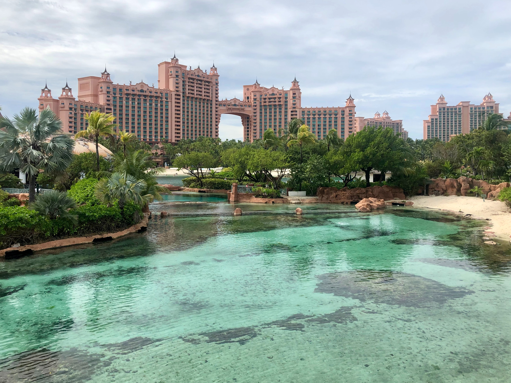

Jamaica

Description
Jamaica, a Caribbean island nation, has a lush topography of mountains, rainforests and reef-lined beaches. Many of its all-inclusive resorts are clustered in Montego Bay, with its British-colonial architecture, and Negril, known for its diving and snorkeling sites. Jamaica is famed as the birthplace of reggae music, and its capital Kingston is home to the Bob Marley Museum, dedicated to the famous singer. ― Google
Bahamas
Description
The Bahamas is known for its rich culture and stunnng beaches.The official language is English and creole and the capital is Nassau.
Dominican Republic
Description
The Dominican Republic is a Caribbean nation that shares the island of Hispaniola with Haiti to the west. It's known for its beaches, resorts and golfing. Its terrain comprises rainforest, savannah and highlands, including Pico Duarte, the Caribbean’s tallest mountain. Capital city Santo Domingo has Spanish landmarks like the Gothic Catedral Primada de America dating back 5 centuries in its Zona Colonial district. ― Google
Las Vegas

Description
Las Vegas also known as sin city is know for its lights and signs and themed casinos with top rated shows and a downtown with a fabulous light show that is amazing to view. The city that never sleeps is an amazing vacation spot for both gamblers and non-gamblers alike.